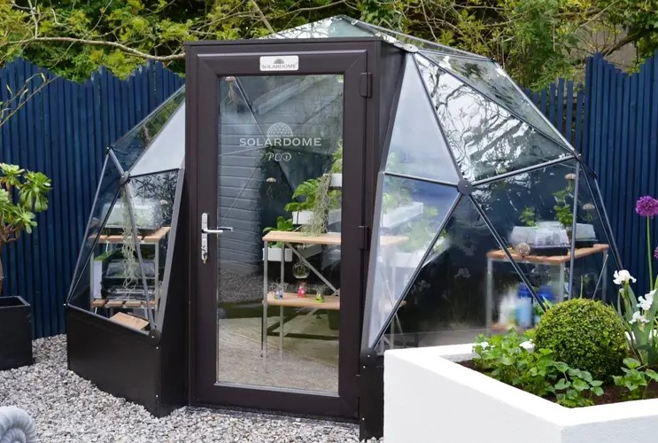

Blue Horizon
Introduction
Where
Project Accessible Greenhouse aims to build small sustainable greenhouses in medium-small homes with the aim of promoting green spaces at home, creating comfortable environments or being able to take advantage of zero kilometer organic products. The project aims to be placed either indoor or outdoor: if indoor it can be build next already existent windows, in houses' corners or it can even occupy a rooom.
When
The idea for the project came to one of our founders when, a few years ago, he became interested in developing a space that could make people feel the green of nature in their own home. From here the idea for the development of these small greenhouses was born.
Objectives
A cozy green space
The Accessible Greenhouse project aims at all those people who live in houses or apartments where there is a lack of outdoor spaces or where it is possible to replace unused space with something comfortable and useful. Greenhouses are also designed to occupy outdoor spaces: in this case there is also the possibility of opting for a larger greenhouse.
Education for sustainable cultivation
With the purchase of an Accessible Greenhouse it will also be possible to take advantage of ZeroCarbon courses which educate people on the self-production of vegetables, fruit and other green products; thus allowing you to learn how to grow food at zero kilometres
Solarpunk space
Our initiative involves creating not only greenhouses, but also small furnished spaces where it is possible to relax among the plants we take care of. This initiative proposes to imitate the progressive-futuristic style of solarpunk
Methods
Construction with sustainable materials
Accessible Greenhouse is a project that has its roots in sustainability: our company takes care of sending experts to select the spaces that can allow the construction of greenhouses. From here a specialized team will take care of removing obstacles and disposing of them before starting construction. This occurs entirely with: recycled materials, recovered from the various projects our company deals with; sustainable materials, purchased and guaranteed by our lenders. The result is a work that is guaranteed to be 90% completely sustainable or made of recyclable materials. If you want to dismantle the Accessible Greenhouse, the materials will be recovered and recycled. In the case of outdoor projects it is also possible to opt for the construction of greenhouses equipped with photovoltaic panels and, in particular cases, also with phytopurification systems with our project Plants Filter